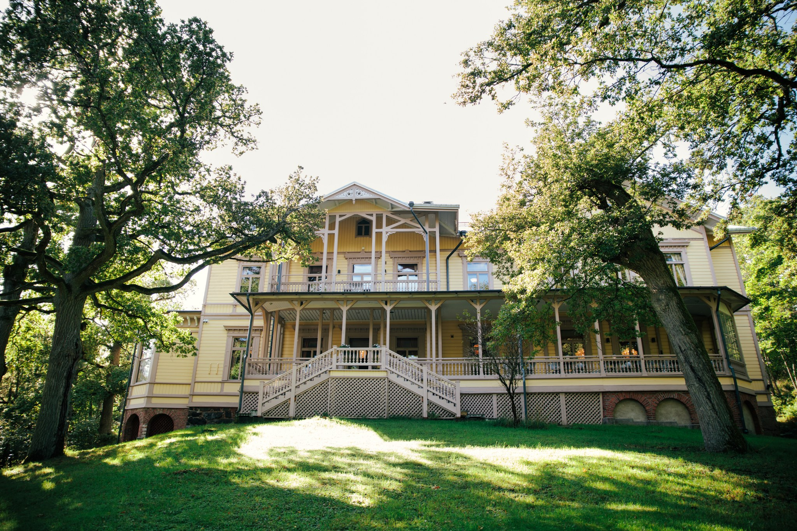
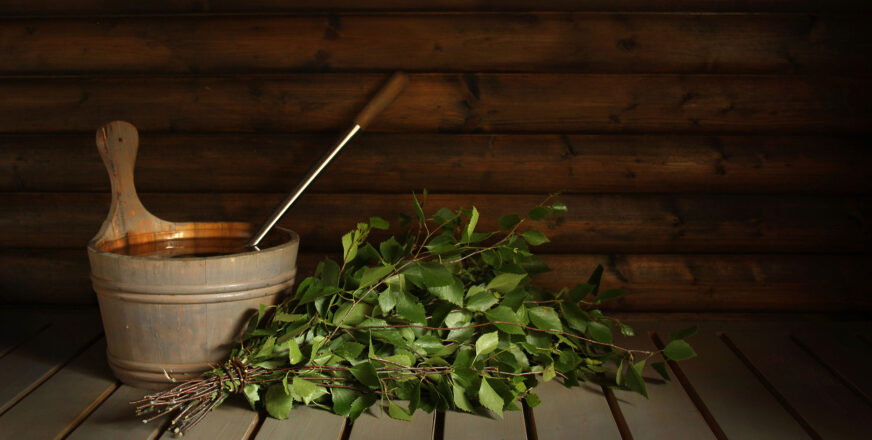

Conference dinner
Note
Registration for the conference dinner is done through the conference registration form. The dinner costs €10. See registration for details.
Experience Finnish midsummer

© Riku Norakari
The conference dinner takes place on a beautiful island of Ruissalo on Wednesday 3rd of June. Ruissalo is a popular recreational area in Turku, and the first island Turku Achipelago—the largest archipelago in the world! The venue—Villa Marjaniemi—is a 150-year-old villa that has hosted many celebrations over the years.
The evening is inspired by Juhannus, an important Finnish summer tradition when people gather to celebrate nature and the summer. The program includes dinner, optional sauna, and informal outdoor activities.
Wednesday, June 3
- 18:00 – Buses depart from the conference venue
- 19:00 – Dinner
- 21:30 – Sauna, networking, and outdoor games
- 00:00 – Buses return
What to expect

- Dinner with Finnish cuisine
- Opportunity to join a sauna
- Informal networking
- Light outdoor activities
Participation in sauna and activities is optional.
Dress code
No dress code. If you want to go to sauna, please take your swimwear with you.
Sauna guidelines

© iStock
Sauna is an optional part of the evening program and everyone is welcome to participate at their own comfort level. We want to make the experience relaxing, inclusive, and respectful for all attendees.
Please note the following:
- Swimwear is required at all times in the sauna and swimming areas.
- Respect other participants’ privacy, personal space, and boundaries at all times.
- Photography is not allowed in sauna or swimming areas.
- Swimming is only allowed together with others for safety reasons. Please do not swim alone.
- Everyone is expected to follow the conference Code of Conduct during all social activities, including the sauna.
Sauna schedule
- 21:30–22:15 – Women’s sauna
- 22:15–23:45 – Inclusive mixed sauna (open to all genders)
You are also welcome to simply enjoy the outdoor activities and networking without attending the sauna.
Location
The dinner will be held in Villa Marjaniemi in Ruissalo island. See the exact location below.
How to get there?
Organized transport
Buses are arranged for all registered participants. They depart at 18:00 from near the conference venue, and the journey takes approximately 20 minutes.
The departure location is Joukahaisenkatu 1.
Other options
The distance between the conference venue and the dinner venue is approximately 7 km. The venue is easily reachable by public transport, with frequent bus (stop 28) and a water bus (stop Ruissalon telakka) connections from the city center to Ruissalo. You can also consider taking a taxi or perhaps using a rental bike.
See the travel information page for more details on local transportation.
How to get back?
Return transportation has been arranged for all participants. The buses will depart from the dinner venue at 00:00, taking you back to the conference venue. The return bus will stop at the Market Square in the city center.
If you prefer to leave earlier or travel independently, there are also several convenient options available. Local buses run frequently from nearby stops, and taxis are readily available in the area.
Based on the current timetable, the available local bus departures are at 21:19, 22:19, and 23:19. Please allow a few extra minutes to walk to the stop. You can check the exact departure times via Föli’s website.
See the travel information page for more details on local transportation.
Questions?
Do not hesitate to contact the organizers at eurobioc@bioconductor.org if you have any questions or concerns.